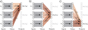
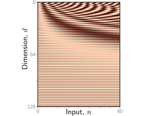

import numpy as np
import matplotlib.pyplot as pltTransformers
Slides
Processing text data
Dot-product self-attention
\[\begin{eqnarray} \mbox{{\bf f}}[\mathbf{x}] = \mbox{{\bf ReLU}}[\boldsymbol\beta +\boldsymbol\Omega\mathbf{x}], \end{eqnarray}\]
\[\begin{eqnarray}\label{eq:transformer_values} \mathbf{v}_{m} = \boldsymbol\beta_{v}+\boldsymbol\Omega_{v}\mathbf{x}_{m}, \end{eqnarray}\]
\[\begin{eqnarray}\label{eq:transformer_sattention1} \mbox{{\bf sa}}_{n}[\mathbf{x}_{1},\ldots, \mathbf{x}_{N}] = \sum_{m=1}^{N}a[\mathbf{x}_{m}, \mathbf{x}_{n}]\mathbf{v}_{m}. \end{eqnarray}\]

Self-attention as routing. The self-attention mechanism takes N inputs x1, . . . , xN ∈ RD (here N = 3 and D = 4) and processes each separately to compute N value vectors. The nth output san[x1, . . . xN] (written as san[x•] for short) is then computed as a weighted sum of the N value vectors, where the weights are positive and sum to one. a) Output sa1[x•] is computed as a[x1, x1] = 0.1 times the first value vector, a[x2, x1] = 0.3 times the second value vector, and a[x3, x1] = 0.6 times the third value vector. b) Output sa2[x•] is computed in the same way, but this time with weights of 0.5, 0.2, and 0.3. c) The weighting for output sa3[x•] is different again. Each output can hence be thought of as a different routing of the N values.
Computing and weighting values
Computing attention weights

Self-attention for N =3 inputs xn, each with dimension D=4. a) Each input xm is operated on independently by the same weights Ωv (same color equals same weight) and biases βv (not shown) to form the values βv + Ωvxm. Each output is a linear combination of the values, with the attention weight a[xm, xn] defining the contribution of the mth value to the nth output. b) Matrix showing block sparsity of linear transformation Ωv between inputs and values. c) Matrix showing sparsity of attention weights relating values and outputs.
Computing attention weights

Computing attention weights. a) Query vectors qn = βq + Ωqxn and key vectors kn = βk + Ωkxn are computed for each input xn. b) The dot products between each query and the three keys are passed through a softmax function to form non-negative attentions that sum to one. c) These route the value vectors (figure 12.1) via the sparse matrix from figure 12.2c.
\[\begin{eqnarray} \mathbf{q}_{n} &=& \boldsymbol\beta_{q}+\boldsymbol\Omega_{q}\mathbf{x}_{n}\nonumber \\ \mathbf{k}_{m} &=& \boldsymbol\beta_{k}+\boldsymbol\Omega_{k}\mathbf{x}_{m}, \end{eqnarray}\]
\[\begin{eqnarray}\label{eq:transformer_sattention2} a[\mathbf{x}_{m},\mathbf{x}_{n}] &=& \mbox{softmax}_{m}\left[\mathbf{k}_{\bullet}^{T}\mathbf{q}_{n}\right]\nonumber\\ &=& \frac{\exp\left[\mathbf{k}_{m}^{T}\mathbf{q}_{n}\right]}{\sum_{m'=1}^{N}\exp\left[\mathbf{k}_{m'}^{T}\mathbf{q}_{n} \right]}, \end{eqnarray}\]
Self-attention summary

Self-attention in matrix form. Self-attention can be implemented efficiently if we store the N input vectors xn in the columns of the D×N matrix X. The input X is operated on separately by the query matrix Q, key matrix K, and value matrix V. The dot products are then computed using matrix multiplication, and a softmax operation is applied independently to each column of the resulting matrix to calculate the attentions. Finally, the values are post-multiplied by the attentions to create an output of the same size as the input.
Matrix form
\[\begin{eqnarray} \mathbf{V}[\mathbf{X}] &=& \boldsymbol\beta_{v}\mathbf{1}^{T}+\boldsymbol\Omega_{\textit{v}}\mathbf{X}\nonumber \\ \mathbf{Q}[\mathbf{X}] &=& \boldsymbol\beta_{q}\mathbf{1}^{T}+\boldsymbol\Omega_{\textit{q}}\mathbf{X}\nonumber \\ \mathbf{K}[\mathbf{X}] &=& \boldsymbol\beta_{k}\mathbf{1}^{T}+\boldsymbol\Omega_{\textit{k}}\mathbf{X}, \end{eqnarray}\]
\[\begin{eqnarray} \mbox{{\bf Sa}}[\mathbf{X}] =\mathbf{V}[\mathbf{X}]\cdot\mbox{\bf Softmax}\Bigl[\mathbf{K}[\mathbf{X}]^{T}\mathbf{Q}[\mathbf{X}]\Bigr], \end{eqnarray}\]
\[\begin{eqnarray}\label{eq:transformer_sa_matrix} \mbox{{\bf Sa}}[\mathbf{X}] =\mathbf{V}\cdot\mbox{\bf Softmax}\Bigl[\mathbf{K}^{T}\mathbf{Q}\Bigr]. \end{eqnarray}\]

Positional encodings. The self-attention architecture is equivariant to permutations of the inputs. To ensure that inputs at different positions are treated differently, a positional encoding matrix Π can be added to the data matrix. Each column is different, so the positions can be distinguished. Here, the position encodings use a predefined procedural sinusoidal pattern (which can be extended to larger values of N if necessary). However, in other cases, they are learned.
The self-attention mechanism maps \(N\) inputs $ ^D $and returns \(x^{\prime} \in \mathbb{R}^D\) outputs .
# Set seed so we get the same random numbers
np.random.seed(3)
# Number of inputs
N = 3
# Number of dimensions of each input
D = 4
# Create an empty list
all_x = []
# Create elements x_n and append to list
for n in range(N):
all_x.append(np.random.normal(size=(D,1)))
# Print out the list
print(all_x)[array([[ 1.78862847],
[ 0.43650985],
[ 0.09649747],
[-1.8634927 ]]), array([[-0.2773882 ],
[-0.35475898],
[-0.08274148],
[-0.62700068]]), array([[-0.04381817],
[-0.47721803],
[-1.31386475],
[ 0.88462238]])]We’ll also need the weights and biases for the keys, queries, and values (equations 12.2 and 12.4)
# Set seed so we get the same random numbers
np.random.seed(0)
# Choose random values for the parameters
omega_q = np.random.normal(size=(D,D))
omega_k = np.random.normal(size=(D,D))
omega_v = np.random.normal(size=(D,D))
beta_q = np.random.normal(size=(D,1))
beta_k = np.random.normal(size=(D,1))
beta_v = np.random.normal(size=(D,1))Now let’s compute the queries, keys, and values for each input
# Make three lists to store queries, keys, and values
all_queries = []
all_keys = []
all_values = []
# For every input
for x in all_x:
# TODO -- compute the keys, queries and values.
# Replace these three lines
query = np.ones_like(x)
key = np.ones_like(x)
value = np.ones_like(x)
all_queries.append(query)
all_keys.append(key)
all_values.append(value)We’ll need a softmax function (equation 12.5) – here, it will take a list of arbitrary numbers and return a list where the elements are non-negative and sum to one
def softmax(items_in):
# TODO Compute the elements of items_out
# Replace this line
items_out = items_in.copy()
return items_out ;Now compute the self attention values:
# Create emptymlist for output
all_x_prime = []
# For each output
for n in range(N):
# Create list for dot products of query N with all keys
all_km_qn = []
# Compute the dot products
for key in all_keys:
# TODO -- compute the appropriate dot product
# Replace this line
dot_product = 1
# Store dot product
all_km_qn.append(dot_product)
# Compute dot product
attention = softmax(all_km_qn)
# Print result (should be positive sum to one)
print("Attentions for output ", n)
print(attention)
# TODO: Compute a weighted sum of all of the values according to the attention
# (equation 12.3)
# Replace this line
x_prime = np.zeros((D,1))
all_x_prime.append(x_prime)
# Print out true values to check you have it correct
print("x_prime_0_calculated:", all_x_prime[0].transpose())
print("x_prime_0_true: [[ 0.94744244 -0.24348429 -0.91310441 -0.44522983]]")
print("x_prime_1_calculated:", all_x_prime[1].transpose())
print("x_prime_1_true: [[ 1.64201168 -0.08470004 4.02764044 2.18690791]]")
print("x_prime_2_calculated:", all_x_prime[2].transpose())
print("x_prime_2_true: [[ 1.61949281 -0.06641533 3.96863308 2.15858316]]")Now let’s compute the same thing, but using matrix calculations. We’ll store the inputs in the columns of a matrix, using equations 12.6 and 12.7/8.
Note: The book uses column vectors (for compatibility with the rest of the text), but in the wider literature it is more normal to store the inputs in the rows of a matrix; in this case, the computation is the same, but all the matrices are transposed and the operations proceed in the reverse order.
# Define softmax operation that works independently on each column
def softmax_cols(data_in):
# Exponentiate all of the values
exp_values = np.exp(data_in) ;
# Sum over columns
denom = np.sum(exp_values, axis = 0);
# Replicate denominator to N rows
denom = np.matmul(np.ones((data_in.shape[0],1)), denom[np.newaxis,:])
# Compute softmax
softmax = exp_values / denom
# return the answer
return softmax
# Now let's compute self attention in matrix form
def self_attention(X,omega_v, omega_q, omega_k, beta_v, beta_q, beta_k):
# TODO -- Write this function
# 1. Compute queries, keys, and values
# 2. Compute dot products
# 3. Apply softmax to calculate attentions
# 4. Weight values by attentions
# Replace this line
X_prime = np.zeros_like(X);
return X_prime
# Copy data into matrix
X = np.zeros((D, N))
X[:,0] = np.squeeze(all_x[0])
X[:,1] = np.squeeze(all_x[1])
X[:,2] = np.squeeze(all_x[2])
# Run the self attention mechanism
X_prime = self_attention(X,omega_v, omega_q, omega_k, beta_v, beta_q, beta_k)
# Print out the results
print(X_prime)
If you did this correctly, the values should be the same as above.
TODO:
Print out the attention matrix You will see that the values are quite extreme (one is very close to one and the others are very close to zero. Now we’ll fix this problem by using scaled dot-product attention.
# Now let's compute self attention in matrix form
def scaled_dot_product_self_attention(X,omega_v, omega_q, omega_k, beta_v, beta_q, beta_k):
# TODO -- Write this function
# 1. Compute queries, keys, and values
# 2. Compute dot products
# 3. Scale the dot products as in equation 12.9
# 4. Apply softmax to calculate attentions
# 5. Weight values by attentions
# Replace this line
X_prime = np.zeros_like(X);
return X_prime
# Run the self attention mechanism
X_prime = scaled_dot_product_self_attention(X,omega_v, omega_q, omega_k, beta_v, beta_q, beta_k)
# Print out the results
print(X_prime) TODO – Investigate whether the self-attention mechanism is covariant with respect to permutation. If it is, when we permute the columns of the input matrix , the columns of the output matrix will also be permuted.